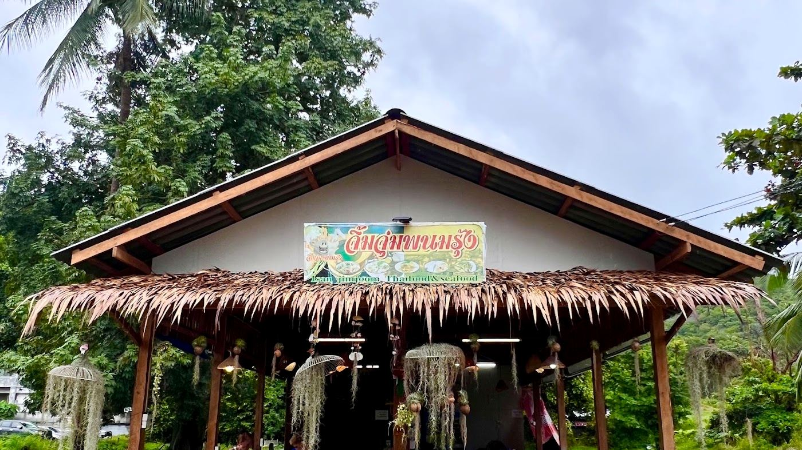
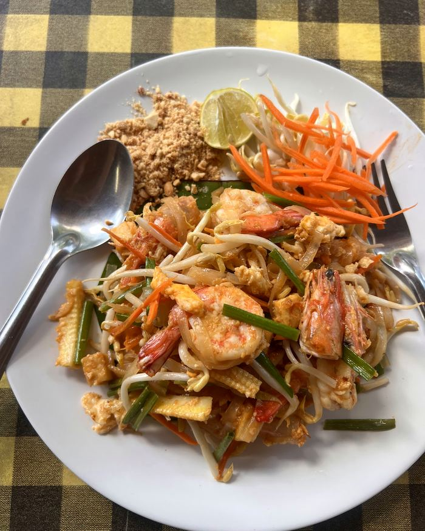
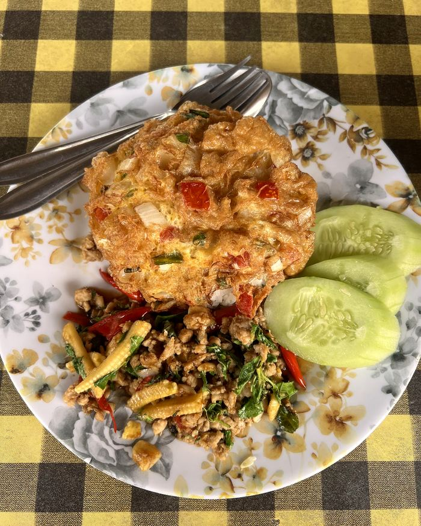
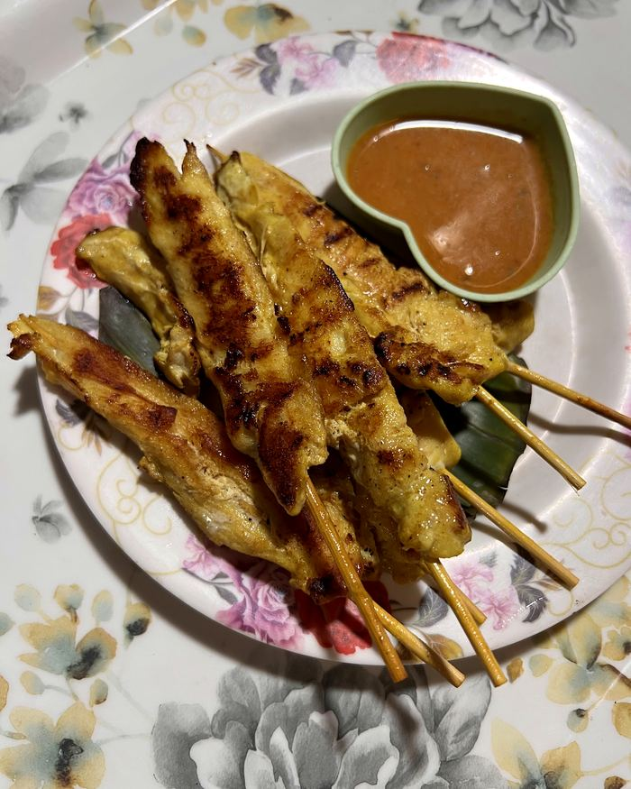
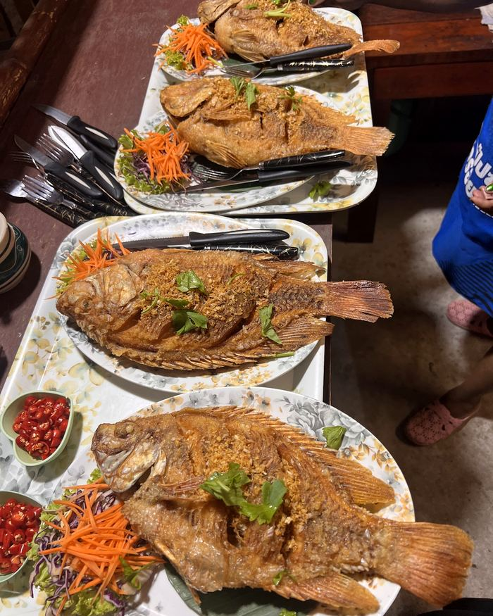
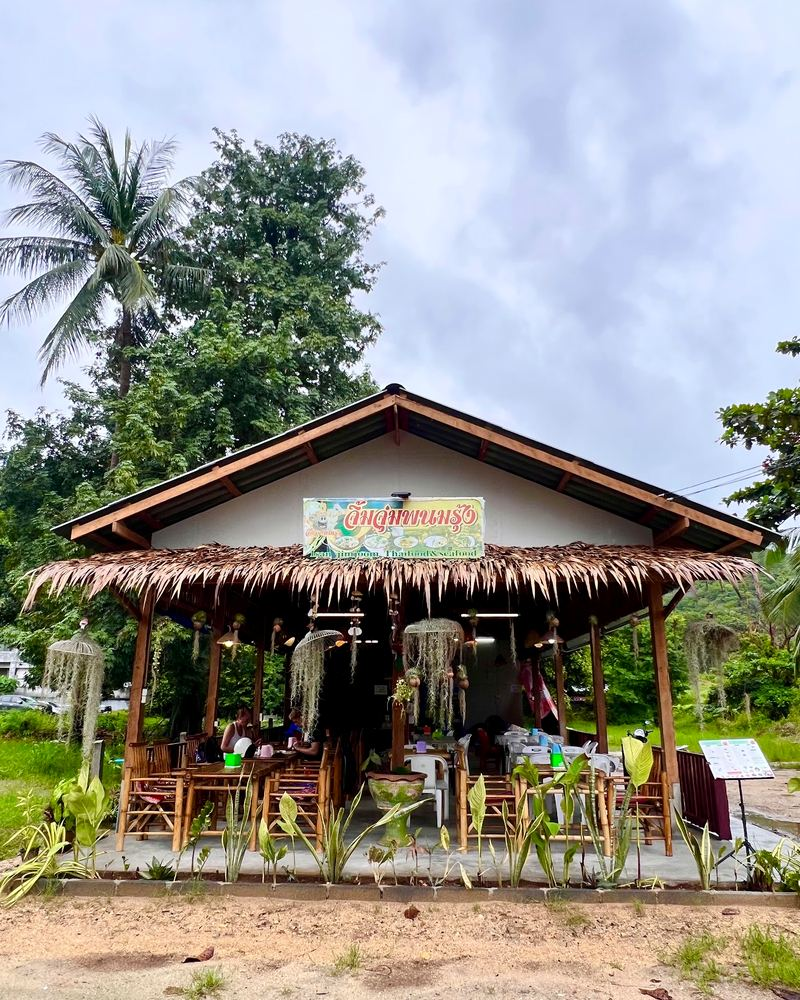

Grilled pork neck, som tam and jim joom hot pot, made as spicy as you like.
Open every day, 10:00 to 22:00





It's the Isan hot pot in our name. This is how it usually goes; ask us and we'll show you.
A clay pot of hot herb broth, set on a little burner on your table.
Meat, vegetables and noodles go into the broth until they're cooked.
Into the spicy sauce, then straight into your mouth. Share it with friends.
Medium: hot, but friendly.Show this to us when you order.

We'll explain the menu, help you choose, and cook it the way you like.
On Thawi Ratchaphakdi Road in Maret, Lamai. Look for the thatched roof.